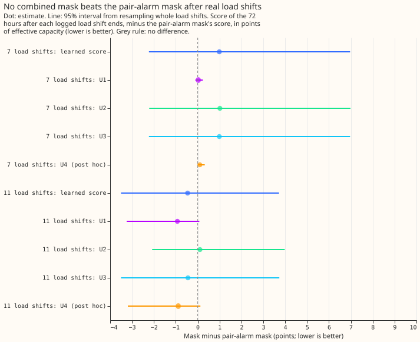
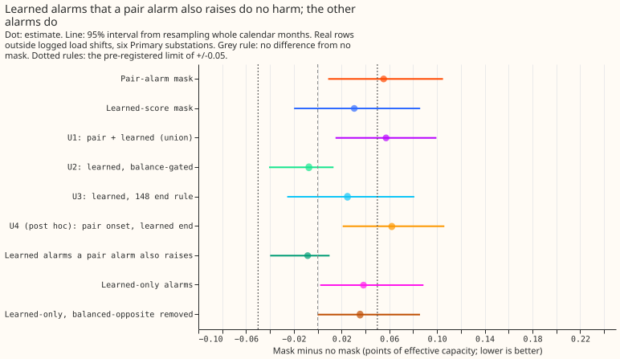
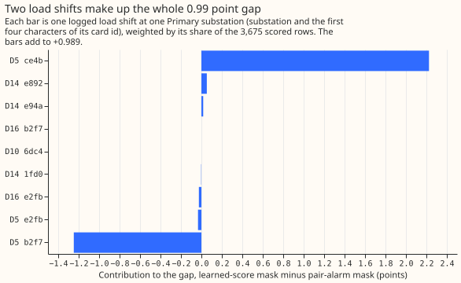
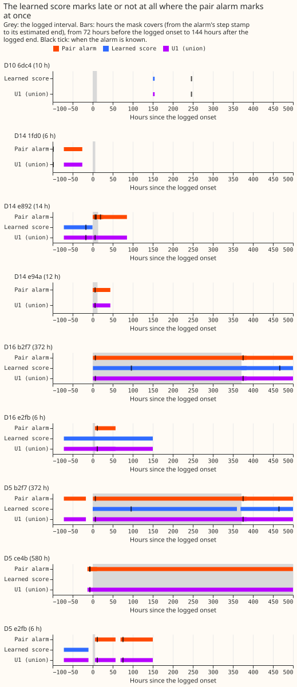

Why did the learned LSC score find more load shifts but give a worse masked forecast, and does a combined mask fix it?
A learned score finds more real load shifts than the pair alarm, but merging the two alarms does not give a forecast mask that is both as good after load shifts and harmless on ordinary days. A load shift is demand that the electricity network operator moves between neighbouring Primary substations for hours or days. The forecast corrects itself using recent power readings, and a load shift makes that correction misread the moved demand as a change in the substation's own demand. An alarm tells the forecast that a load shift is probably under way, and a "mask" then sets the recent readings aside while the alarm is open. We compared two alarm sources. The pair alarm raises an alarm when one substation's power steps and a neighbour's steps the opposite way. The learned score is a small neural network that re-ranks candidate steps by how much they resemble a load shift (experiment 195). Of 35 load shifts lasting over 1 day in NGED's log, the learned score matches 24 and the pair alarm 5, where an alarm matches when its step lies within 2 hours of the logged start and its estimated end within the larger of 6 hours and 10% of the duration of the logged end. Even so, in experiment 203 the learned score's mask scored worse than the pair alarm's mask on the 7 logged load shifts that the best guess 2 forecast (the best forecast assembled in experiment 87) also covers (7.31 against 6.32 points, where a point is 1% of a substation's effective capacity and lower is better). This experiment splits that gap load shift by load shift, splits the harm on ordinary days by alarm source, and tests three combined masks fixed before any score was read. No combination met the pre-registered prediction.
The pair alarm is that of experiment 156 with the balance gate of experiment 166, and the forecast harness of experiment 203, which this experiment reuses unchanged: the same cached daily forecasts, the same rows, and the same controls, which reproduce here (no mask 13.686, pair-alarm mask 6.321, best guess 2 10.091).




Results
- Verdict:
not supported. The best combination on the 7 load shifts is U1, and of the three conditions it meets one (finds 21 of 35, at least 20). It misses 6.32 by 0.03 points (6.350) and its ordinary-day harm is +0.057, above the +0.02 limit. U2 meets the harm condition and misses the other two. The prediction fails because every combination loses to or only ties the pair-alarm mask on the 7. - Combinations (all use the re-ranker, known 192 half-hours after the step). U1: pair alarm and learned score merged, one interval per 24 hours, earlier known time and later end. U2: learned alarms whose folded opposite-step ratio is at least 0.7 (experiment 166's gate). U3: learned alarms with the end known only by experiment 148's rule. U4 (post hoc, not pre-registered): pair-alarm onset and learned-alarm end.
- Mean score of the 72 hours after a load shift (points). The 7 load shifts that best guess 2 also scores: no mask 13.686, pair 6.321, learned score 7.310, U1 6.350, U2 7.336, U3 7.310, U4 6.419, best guess 2 10.091. The 11 load shifts of experiment 163's scored and replicate months: no mask 10.129, pair 6.083, learned score 5.623, U1 5.154, U2 6.186, U3 5.639, U4 5.196.
- Gain against the pair-alarm mask (95% interval, load shifts resampled whole). On the 7: U1 +0.029 (-0.103 to +0.236), U2 +1.016 (-2.214 to +6.986), U3 +0.989 (-2.229 to +6.963), U4 +0.098 (+0.018 to +0.325). On the 11: U1 -0.929 (-3.245 to +0.074), U2 +0.104 (-2.080 to +3.979), U3 -0.444 (-3.504 to +3.734), U4 -0.887 (-3.194 to +0.125). Leaving D5 out of the 7 load shifts moves the learned-score gap from +0.99 to +0.09.
- The 0.99 point gap is two load shifts. The 7 load shifts give 9 scoring windows (the bars of figure 3), because two load shifts touch two of the six substations. One 580-hour load shift at D5 (card ce4b, where a card is the identifier of a logged load shift) adds +2.226 points. The pair alarm is known 7 hours before the logged start, and its step is 13 hours before the logged start. The learned score has no alarm at the step. Its only alarm there is, by experiment 203's account, the next load shift's start, known 95.5 hours after this load shift ends.
- The learned score wins where the pair mask is over-long. One 372-hour load shift at D5 (card b2f7) adds -1.248. The learned mask covers 580 hours with 218 outside the logged interval, and the pair mask covers 1,164 hours with 794 outside. The other seven scoring windows add +0.011 in total.
- A late alarm is the cause where the learned score loses. The learned score's alarm for ce4b is
known after the load shift ends, and 2.2 of the 2.3 points where the learned score loses come from
that one load shift. Over-long masks are the pair alarm's weakness where the learned score wins
(b2f7). Which cause applies to a given load shift is in
printed_decompose.txt(onset error, hours known after the logged onset, hours masked inside and outside the logged interval, and logged hours never masked). - Matches of the 35 logged load shifts lasting over 1 day (experiment 195's rule). Pair alarm 5, gated pair alarm 3, RO-NC 19, learned logistic regression 20, learned re-ranker 24, U1 21, U2 6, U3 24, U4 21.
- Harm on ordinary days (arm minus no mask, 1,579,711 rows, no mask 2.718; 95% interval from whole months). Pair alarm +0.055 (+0.009 to +0.105), learned re-ranker +0.031 (-0.020 to +0.086), U1 +0.057 (+0.015 to +0.100), U2 -0.007 (-0.041 to +0.013), U3 +0.025 (-0.026 to +0.081), U4 +0.062 (+0.021 to +0.106).
- Split of the re-ranker's alarm intervals (counts are merged intervals) by whether a pair alarm also raises them (within 24 hours). Alarms both raise (23 to 29 per fold): -0.008 (-0.040 to +0.010). Learned-only alarms (81 to 94 per fold): +0.038 (+0.002 to +0.089). Learned-only alarms without the balanced-opposite candidates (an opposite step of 0.4 to 2.5 times the own step, which experiment 195 treats as probable unlogged load shifts when no logged load shift explains the alarm; 64 to 76 per fold): +0.036 (-0.000 to +0.086). Removing the probable unlogged load shifts therefore does not remove the harm.
- Learned-only alarms give no gain after a load shift. On the 7 load shifts a mask built from them scores 13.651 against 13.686 with no mask (-0.035, -0.152 to +0.000), and on the 11 load shifts 9.506 against 10.129 (-0.624, -2.048 to -0.009). The extra load shifts the learned score finds are small or late for the forecast.
- Harm by Primary substation (arm minus no mask). The pair alarm's harm sits at D10 (+0.221; +0.022 pooled without D10). The learned score's harm sits at D10 (+0.124) and D9 (+0.088, where the pair alarm raises none). U2 is at or below +0.014 at every substation.
- Harm by season. The learned score's harm is in autumn (September to November, +0.148, +0.003 to +0.327), against -0.044 in winter (-0.189 to +0.049). U2 is at most +0.016 in every season.
- Row sets and schedule. Experiment 163's AFTER rows and experiment 171's ordinary rows, as in experiment 203. The cached forecasts are daily at 09:00 UTC, not 6-hourly (a 6-hourly replay needs new ensemble forecasts), and the end of an alarm that experiment 147 did not raise is known 60 half-hours after its estimated end, a lab shortcut. Nothing is refitted.
- Checks: median and mean forecast. The median forecast minus the mean forecast per site is the same for no mask and the learned-score mask to three decimals (D5 -0.146, D10 -0.058, D11 -0.030, D14 +0.037, D16 +0.017, D9 -0.019), because a mask changes the correction only through the mean.
- Checks: mean-forecast error beside each contrast. The mean forecast's absolute error on ordinary days, arm minus no mask, points the same way as each quantile-score contrast: U1 +0.104 (+0.035 to +0.176), U2 -0.007 (-0.055 to +0.026), U3 +0.033 (-0.041 to +0.114), U4 +0.103 (+0.038 to +0.174). On the 7 load shifts the learned score's mean-forecast error minus the pair alarm's is +0.525 (-3.238 to +7.311), the same sign as +0.989.
- Checks: audit triggers (the
ml-experimentskill's seven tests for a result that needs an independent audit). Trigger 2 (a result contradicts its prediction) fired, and the load-shift decomposition above is the tested explanation. Trigger 4 (leaving one site out) changes the 7-load-shift gain, which is why the page does not rest on that contrast. The controls reproduce and the quantile-score and mean-forecast contrasts agree. Trigger 7 applies in part, because experiment 227 takes the best combination from this page as one of its alarm sources, but experiment 227 sweeps its own thresholds and does not depend on the headline sign. No audit was run. - Caveats. The learned scores are partly in-sample on ordinary days (experiment 195 trained them with even-month candidates as negatives). The 7 and 11 load shifts are few, so every gain interval is wide. U1 to U3 were chosen on the 7 load shifts, and U4 is post hoc. The pair-alarm intervals that are merged into U1 are the same 242 alarms of experiment 163.
- What this narrows. The learned score's extra matches are not where the forecast gain is, and they are where the ordinary-day harm is. A mask that stays at or below the harm limit needs fewer false alarms per matched load shift, and an alarm that arrives early on long load shifts. The next experiment, 227, tests alarm sources and thresholds by alarms per matched load shift, and uses of an alarm that keep recent power.